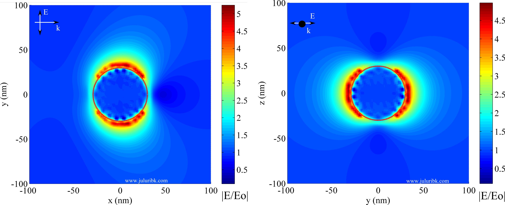

DDSCAT and electric field at plasmon resonance
Posted on Wed 26 May 2010 in Plasmonics
Discrete Dipole Approximation (DDA) is an important tool in plasmonics research. Using DDA, one can calculate scattering properties of nanoparticles at various wavelengths, polarizations and surrounding medium. The specialty of DDA is that one can calculate scattering properties of irregular shape particles (particles other than spheroids). DDA is based on representing a particle into a set of interacting dipoles and solving their dipole moments such that they are all self-conistent with each other and are linked by far-field and near-field interactions. Once these dipole moments are calculated, they can be used to calculate scattering properties such as scattering efficiency, absorption efficiency and extinction efficiency. Not only efficiencies, one can also calculate electric field and magnetic field at an interested wavelength of incident light. More information on DDA can be found in this review paper.
There are various codes that have implemented the discrete dipole approximation method. My favorite implentation is DDSCAT. DDSCAT is a free and easy to learn code. You can get more information on downloading and installing DDSCAT here.
Here, I have used DDSCAT to calculate the electric field near the vicinity of a 60 nm gold nanoparticle in water at localized surface plasmon resonance (532 nm). Note the large electric field at the edges of the nanoparticle and dipolar field due to plasmon resonance.
Electric field distribution inside and outside of a 60 nm Au nanosphere in water at a wavelength at LSPR (532 nm). These results were obtained using DDSCAT 7.1. 
UPDATE: Many of my readers were interested in the simulation files. You can find my project file here.
Note that electric fields were calculated using DDSCAT7.1 (ddscat7.2 uses totally different method to calculate electric field). The folder contains details for calculating and plotting the electric field around a sphere in xy plane, where light is polarized in y direction and propagting in x direction. But this could be extended to other geometries and other planes of interest. Follow these steps: 1) Read the flowchart.ppt to understand the problem of interest and the work flow 2) compile the ddscat7.1 source_code on linux or windows with cygwin 3) get hold of octave/matlab for running the efield part.